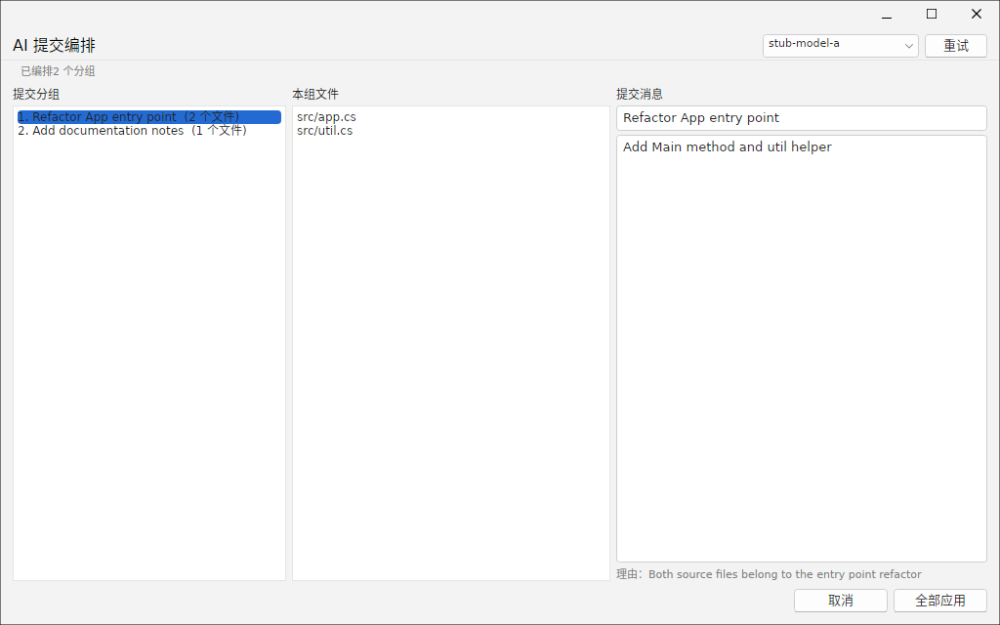
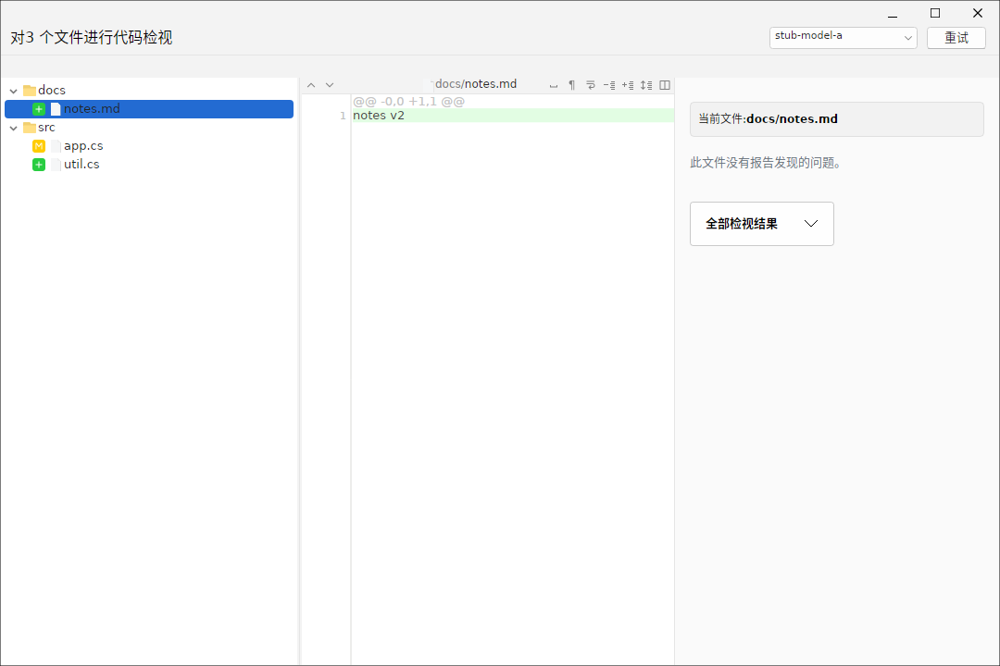
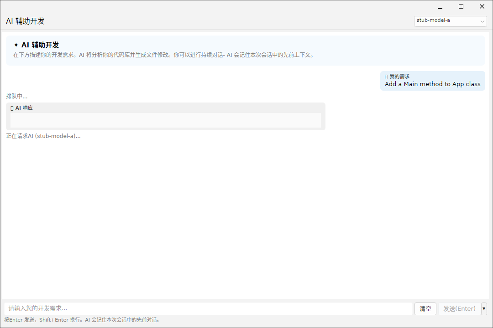

ForkPlus 提供三组 AI 增强能力：提交信息组合（AI 提交编排）、代码审查（代码检视）与AI 开发助手。它们共用同一套模型配置（在「偏好设置 → AI」页指定后端与模型）。窗口右上角的模型下拉可随时切换所用模型，供智能分组/检视/对话的模型可动态拉取。
提交信息组合（AI 提交编排）
当工作区有批量暂存（Staged）文件时，可用「AI 提交编排」让 AI 把一整批改动按语义拆分为多个逻辑提交，并为每组自动生成提交信息。窗口分为三栏：
- 提交分组（左）：AI 生成的提交分组列表，每项带文件数，可点选切换。
- 本组文件（中）：当前分组包含的文件路径。
- 提交消息（右）：当前分组的标题与描述，可在此人工编辑后应用。
右侧底部还会展示该分组的理由（Reason），说明 AI 为何把若干文件归到同一提交，便于审查其分组逻辑。底部「全部应用」把各组按序应用为多个提交；「重试」可让 AI 重新编排。

小贴士：分组依据是改动之间的功能关联而非目录位置——左侧示例中即使
app.cs 与 util.cs 都在 src/，它与引用它的入口重构一起归组；独立的文档改动则单独成组。应用前务必核对「提交消息」栏内容。代码审查（代码检视）
「代码检视」窗口对多个待审查文件逐一运行 AI 审查，采用三栏布局：
- 文件树（左）：待审查文件与文件夹结构，带绿色对勾表示该文件已检视。
- 代码 / Diff 视图（中）：当前文件的统一 Diff（如
@@ -0,0 +1,1 @@），新增行以浅绿色高亮。 - 检视结果（右）：当前文件的问题报告；无问题时显示「此文件没有报告发现的问题。」。可通过「全部检视结果」下拉在单文件与全量结果间切换。
窗口标题显示审查规模（如「对 3 个文件进行代码检视」），右上同样可选模型与「重试」。

AI 开发助手
「AI 辅助开发」是一个面向当前仓库的对话式助手，采用聊天界面：右侧为自己提出的需求，左侧为 AI 响应。具备：
- 会话上下文：AI 会记住本次会话的先前对话，便于多轮迭代。
- 请求状态：显式显示「排队中…」「正在请求 AI（模型名）…」等处理中状态。
- 发送快捷键：按 Enter 发送，Shift+Enter 换行。
- 清空 / 发送按钮：底部输入框右侧提供「清空」与「发送（Enter）」。此处演示向 AI 提出「给 App 类添加 Main 方法」的开发需求，AI 正在生成响应。

AI 冲突解析
除了上述三组窗口，AI 能力还可直接用于合并冲突的自动解决：当合并（或拉取、变基、应用 Stash）引发冲突时，可在冲突视图中点击 🤖 AI 解决冲突 按钮，让 AI 读取带冲突标记的文件并智能合并两侧变更、去除冲突标记；确认应用后写回并暂存。
其模型与后端同样取自「偏好设置 → AI」页的 AI 检视设置，无需单独配置。详细步骤（如何配置 AI、点击 AI 解析按钮、查看合并结果与确认写回）见 第 14 章 · 合并冲突解决 的「AI 辅助解决冲突」一节。
小贴士：AI 功能以本地假服务（stub 模型）验证时返回占位响应；接入真实模型后，提交编排、代码审查与开发助手的输出质量取决于所选模型与后端配置。请在「偏好设置 → AI」页填写可用的 API 端点与密钥。